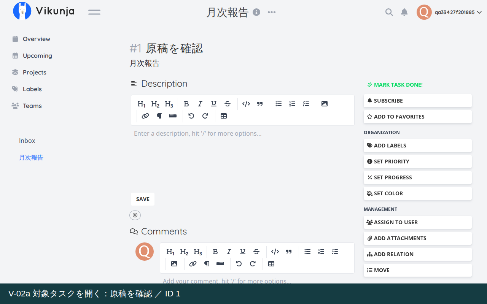
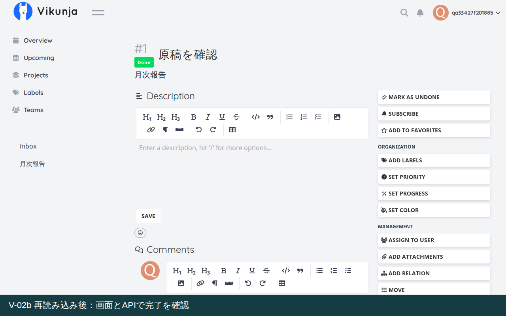

完了状態の保存
完了後に詳細を再読み込みし、未完了に戻す操作が表示されることと、APIで同じIDが完了になっていることを確認しました。
検査画面




判定結果 再読み込み後も画面には未完了に戻す操作が表示され、API でも同じタスク ID が完了状態でした。
操作動画
ローカルでの録画 · Chromium · 72da163
完了後に詳細を再読み込みし、未完了に戻す操作が表示されることと、APIで同じIDが完了になっていることを確認しました。


判定結果 再読み込み後も画面には未完了に戻す操作が表示され、API でも同じタスク ID が完了状態でした。
ローカルでの録画 · Chromium · 72da163